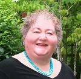
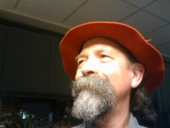
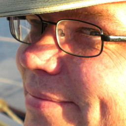

| |
Conference Hosts

|
Troy Frever discovered XP in 2000, after two decades as a professional
software developer. Since then he has been an Extreme Programmer and Coach for
a number of companies in the Seattle area, including Active Voice, Cisco Systems,
Quicksilver Technology, Aviarc Corporation, and RealNetworks. He is currently
having a grand time as a member of the agile development team at
Smilebox, Inc. in Redmond, WA. When he's not writing unit tests or refactoring
mercilessly, Troy enjoys backpacking and skiing with his family and playing
Ultimate Frisbee. Troy is also an organizer of the Seattle Extreme Programming
Users Group (SXPUG).
|
|

|
Diana Larsen served three years as Chair of the Agile Alliance board
of directors and is currently serving as a board member for the group. As a partner in
FutureWorks Consulting, Diana consults
with leaders and teams to create work processes where innovation, inspiration, and
imagination flourish. With more than fifteen years of experience working with technical
professionals, she brings focus to the human side of organizations, teams, and projects.
Diana co-authored Agile Retrospectives: Making Good Teams Great! with Esther Derby,
Liftoff: Launching Agile Teams and Projects with Ainsley Nies, Virtuosity with
Willem Larsen and writes occasional blog posts
and articles.
Diana discovers solutions and possibilities where others only find barriers and obstacles.
|
|
|
Charlie Poole has spent more than 30 years as a software developer,
designer, project manager, trainer and coach. After a long career in IT for
a local government agency, he has managed an independent consultancy since 1995,
with clients ranging from government agencies to internet startups. Through his company,
PooleConsulting, he works with teams to help
them adopt agile practices and with managers to help them understand how
to work with agile teams.
Charlie specializes in the role of tests in agile development and regularly
presents workshops on topics like Test-Driven Development and
Communicating with Tests. He is the primary maintainer of the open source
NUnit Test Framework, supporting cross-platform
development of managed code, and the author
of the NUnitLite embedded framework.
He is currently working on a number of test-integration tools, including
one for the Visual Studio environment.
Charlie maintains a developer-oriented web site at
charliepoole.org and a blog at
nunit.com/blogs. He developed and
hosts the Agile Open Northwest site.
|
|

|
Ian Savage. A quality evangelist, Ian is a veteran software developer, quality engineer, and manager with experience in manufacturing, financial services, construction project estimating, and software security. For more than 30 years, he has worked to improve productivity and software quality through rigorous development methods and processes and now through the pragmatic application of Agile methods.
He founded/co-founded various Pacific Northwest software and quality volunteer organizations. By day he works with the Quality Initiatives Team at McAfee focusing on metrics, static analysis, and quality systems. His present interests are software security, insourcing vs. outsourcing, and quality training. Like many others, Ian looks forward to retirement or Career 2.0.
|
|

|
Michael Tardiff has been working with teams to deliver software and services for three decades, in large enterprises and small startups on both coasts of the United States and in Europe. He has experience in operating systems development, enterprise portals, Web-based B-to-B e-commerce, data communications networks, Web presence, and telecommunications products.
Working with teams that want to learn how to use Agile methods or to use them better, nothing makes him happier than “hearing development happen” as teams collaborate, pair-program, and resolve issues…except helping the team celebrate finishing a sprint.
Michael talks wherever and whenever he’s welcome, blogs on agile topics (http://feelingagile.com), is a co-host of The Agile Coach podcast (available on iTunes), and spends the rest his time sailing the Pacific Northwest’s inland waters.
|
|
|
Rebecca Wirfs-Brock, president of Wirfs-Brock Associates,
specializes in the development of design and architecture expertise to organizations through training,
mentoring, personal coaching, and consulting. A former Agile Alliance board member and IEEE Software
design columnist, Rebecca is active in the agile and patterns community. Rebecca is co-chair of the
2013 Agile conference Experience Reports Track. If you are interested in writing about your agile
experiences and insights and sharing them at Agile 2013, contact Rebecca.
Rebecca invented the set of design practices known as Responsibility-Driven Design and has
authored two popular books on object design. She is an innovator practical design and analysis
techniques, including commonality-variability analysis and hot spot cards to characterize design
flexibility. She excels at helping teams develop solutions to complex problems. Rebecca works with
teams to improve how they approach agile design, manage and reduce technical debt, refactor their code,
and address architectural risks. In addition to coaching, Rebecca teaches Pragmatic TDD, agile design
and age use case writing and conducts Agile Architecture workshops.
She blogs at www.wirfs-brock.com/blog
|
|
|